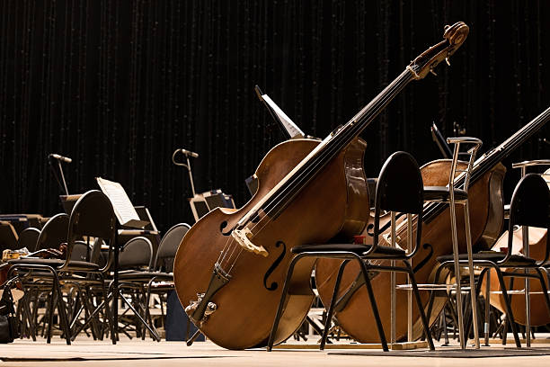

Double Bass
Double basses are classified as composite chordophones. They make sound by using a bowed string against strung strings which vibrate through the hollow body of the instrument. The double bass is played while standing due to the size of the instrument.

Classical Applications
The double bass serves as a low tone and rhythmic source to the orchestra. It mostly adds rich tones to the overall harmonies of the orchestra. The way it can be plucked and bowed allows for a rhythmic pulse that guides the rest of the orchestra in the piece.
Famous Piece
The Pink Panther theme uses the double bass to make a foundational cadence for the song. The resonance from the notes help carry the tune and create areas of space without melody but with sound.
Fun Fact!
Despite being a string instrument that is mostly known for orchestra, the double bass is widely used in many types of ensembles. Jazz bands and concert bands regularly employ double bass as a way of reaching very low notes and providing an anchor for the band.